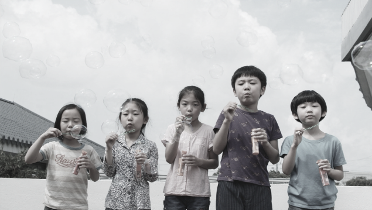

2040 is not a prediction,
but a speculative point of observation.
01. Demographic
Background
(Population Dead Cross)
(Low Fertility)
(Recent Fertility Rebound)
(Long-term Demographic Outlook)
본 프로젝트의 사회적 배경을 이해하기 위해 먼저 구분해야 할 개념이 인구 자연증가(Natural Increase)이다.
출생아 수보다 사망자 수가 많아 이 값이 음수가 되는 상태를 공식 인구통계에서는
인구 자연감소 (Natural Population Decrease) 라고 한다.
‘인구 데드크로스’는 이러한 출생과 사망의 역전 현상을 설명할 때 언론이나 대중 담론에서 사용하는 표현이다. 따라서 본 프로젝트에서도 프로젝트의 사회적 배경을 설명하는 용어로는 사용할 수 있지만, 연구 본문에서는 ‘자연감소’라는 공식 통계 용어를 병행하는 것이 정확하다. 2019년 대한민국에서는 302,676명이 태어나고 295,110명이 사망해 자연증가가 +7,566명이었다. 그러나 2020년에는 출생아 272,337명, 사망자 304,948명으로 자연증가가 -32,611명으로 전환되었다. 대한민국에서 처음으로 연간 기준 자연감소가 나타난 것이다.
이후 자연감소는 이어지고 있다. 2025년에도 사망자는 잠정 기준 약 36만 3천 명으로 출생아보다 약 11만 명 많았다. 따라서 본 프로젝트에서 중요한 지점은 단순히 “한국의 출산율이 낮다”는 사실을 넘어, 출생보다 사망이 많은 인구구조가 이미 현실에서 지속되고 있다는 점이다.
대한민국의 합계출산율은 장기간 하락해 왔다. 합계출산율은 한 해의 연령별 출산율이 유지된다고 가정했을 때 여성 한 명이 가임기간 동안 낳을 것으로 예상되는 평균 출생아 수를 의미한다. 2015년 1.24명이던 대한민국의 합계출산율은 2020년 0.84명, 2022년 0.78명, 2023년에는 0.72명까지 하락했다. 출생아 수 역시 2015년 438,420명에서 2023년 약 23만 명까지 감소했다. 2024년부터는 다시 상승하는 변화가 나타났지만, 장기적으로 보면 출생 규모 자체가 이전보다 크게 작아진 상태이다. 중요한 것은 이러한 저출생을 하나의 원인으로 단순화하지 않는 것이다. OECD의 2025년 보고서 Korea's Unborn Future는 한국의 저출생을 일과 돌봄의 양립 문제, 성별 역할과 노동시장 구조, 주거비, 자녀 교육비, 부모가 되는 데 따르는 기회비용 등 여러 사회·경제적 조건이 복합적으로 작용한 결과로 분석한다. 즉 “청년들이 아이를 낳지 않기 때문”이라는 개인 선택의 문제만으로 설명할 수 없는 구조적인 현상이라는 것이다.
인구 데드크로스
대한민국의 저출생
최근 출생 지표의 반등
장기 인구 전망과 2040년의 설정
2040년은 미래를 예측하는 연도가 아니라,
현재의 인구 변화가 공간에서 어떻게 드러날 수 있는지를 관찰하기 위한 가상 시점이다.
(Population Dead Cross)
(Low Fertility)
(Recent Fertility Rebound)
(Long-term Demographic Outlook)
Natural Increase = Births − Deaths

최근 자료에서는 이전과 다른 흐름도 확인된다. 2024년부터 대한민국의 출생아 수와 합계출산율은 다시 증가하기 시작했다. 2025년 확정 출생아 수는 254,341명으로 전년보다 16,024명, 6.7% 증가했다. 합계출산율도 약 0.80명으로 상승했다. 2026년에도 현재까지 출생 증가 흐름이 이어지고 있다. 가장 최근 발표된 2026년 6월 자료에서 출생아는 23,111명으로 전년 같은 달보다 15.6% 증가했다. 그러나 같은 달 사망자는 27,794명으로 자연증가는 -4,683명이었다. 즉 출생아 수의 증가와 인구 자연감소가 동시에 나타나고 있다. Reuters 역시 2025년 합계출산율 상승을 긍정적인 변화로 평가하면서도, 이것이 장기간 지속될 구조적인 반전인지 판단하려면 추가적인 관찰이 필요하다는 전문가 견해를 함께 전했다. 따라서 본 프로젝트에서는 최근의 출생 증가를 제외하거나 축소해서는 안 된다. 오히려 다음 두 사실을 동시에 제시하는 것이 중요하다. 최근 출생 지표는 분명 개선되고 있다. 그러나 자연감소와 장기적인 연령구조 변화는 아직 지속되고 있다. 이 두 사실을 함께 보여주는 것이 인구 문제를 과장하지 않으면서도 프로젝트의 필요성을 설명하는 가장 정확한 방식이다.
최근 출생아 수와 합계출산율이 일부 반등하고 있지만, 대한민국의 장기적인 인구구조 변화가 곧바로 멈추는 것은 아니다. 장래인구추계에서는 총인구 감소와 함께 연령구조의 변화가 지속될 것으로 전망되며, 특히 학령인구와 청년인구의 감소, 고령인구 비중의 증가가 두드러진다. 국가데이터처의 「장래인구추계: 2022~2072년」중위 시나리오에 따르면 대한민국의 총인구는 2022년 약 5,167만 명에서 2040년 약 5,006만 명으로 감소할 것으로 전망된다. 2040년에는 65세 이상 고령인구 비중이 약 34.3%까지 증가하고, 15~64세 생산연령인구 비중은 약 58.0%로 낮아질 것으로 추계된다. 또한 6~21세 학령인구는 2022년 약 750만 명에서 2040년까지 약 337만 명 감소할 것으로 전망된다.
이러한 변화는 대한민국의 모든 지역에서 동일하게 나타나는 것은 아니다. 시도별 장래 인구추계에 따르면 2022년 대비 2052년 총 인구는 세종과 경기를 제외한 15개 시도에서 감소할 것으로 전망되며, 감소 폭 역시 지역마다 다르다. 특히 학령 인구는 모든 시도에서 감소할 것으로 전망되어 교육 공간과 같은 특정 시설의 이용수요는 지역에 따라 더 크게 변화할 수 있다. 따라서 본 프로젝트에서 2040년은 대한민국 전체가 비어버리는 시점을 의미하지 않는다. 2026년과 충분히 연결되어 있으면서도 현재의 저출생과 인구구조 변화가 누적되어, 공간의 이용 방식과 밀도에 차이가 나타날 가능성을 탐구하기 위한 중기적 미래 시점으로 설정함을 전제로 한다.